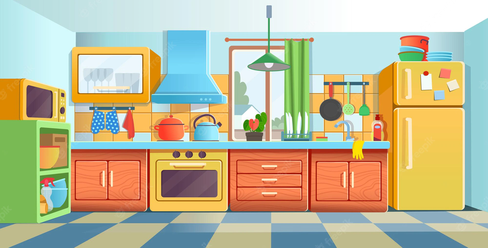

Рок група Scorpoins
Scorpions (Скорпіонс) — легендарний німецький рок-гурт,
заснований 1965 року, у місті Ганновер. Для стилю групи є характерними як
класичний рок, так і ліричні рок-балади. Гурт є найвідомішим у Німеччині,
та одним з найвідоміших у світі. Понад 115 мільйонів платівок гурту було
продано.
Відомі композиції
Відомі відеокліпи
Kitchen
